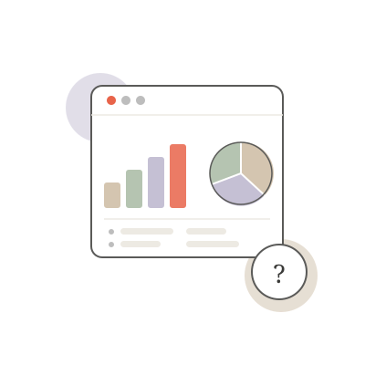
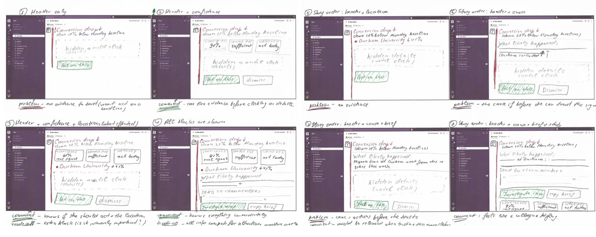
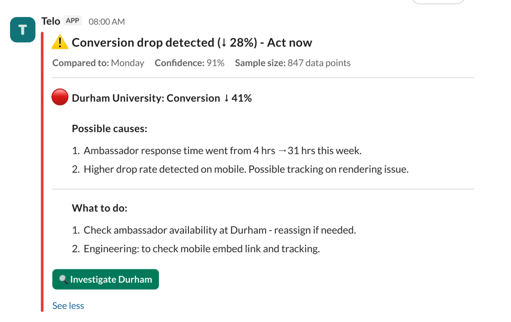
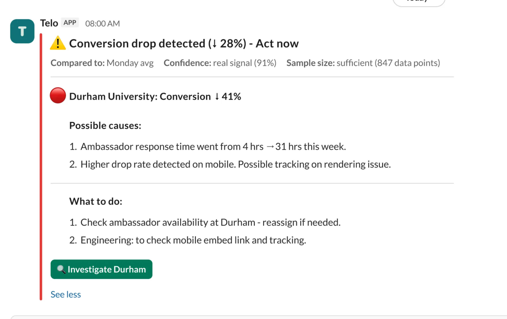
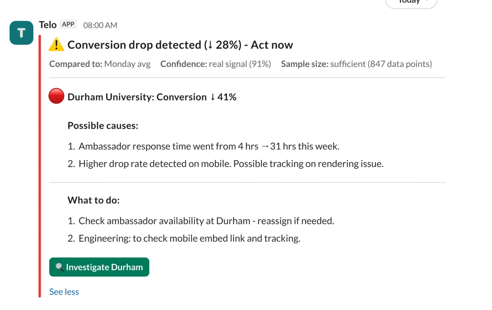
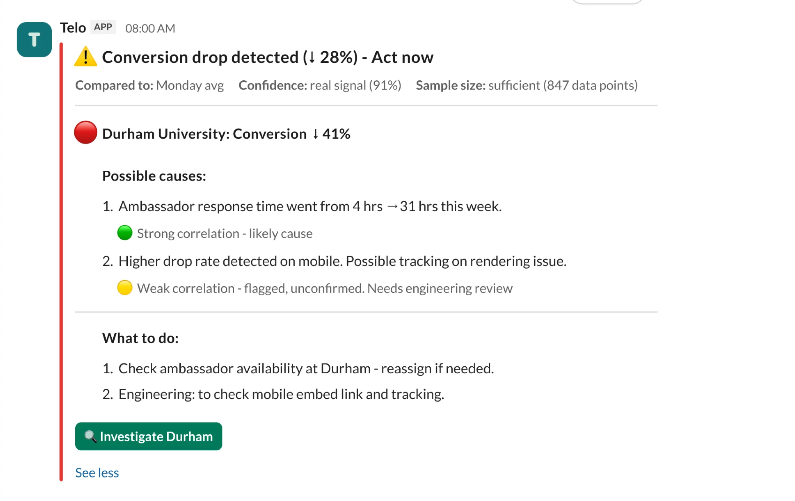
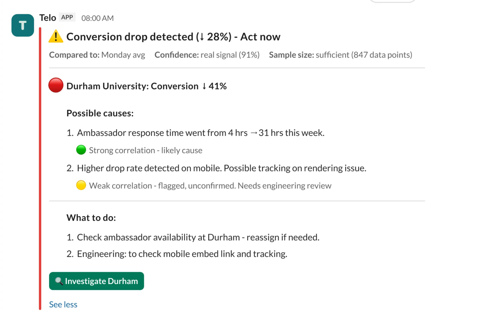
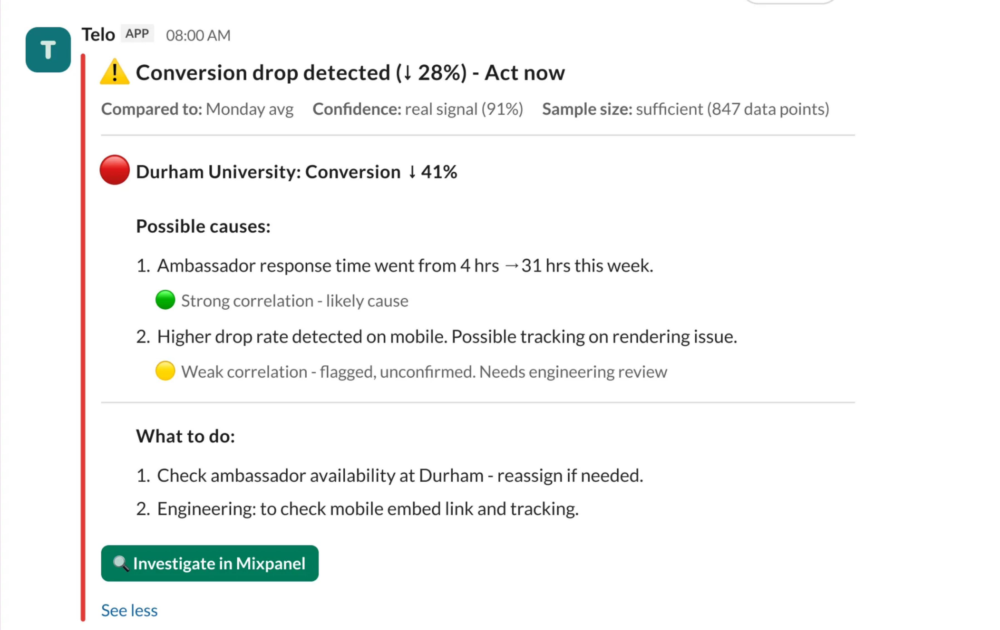
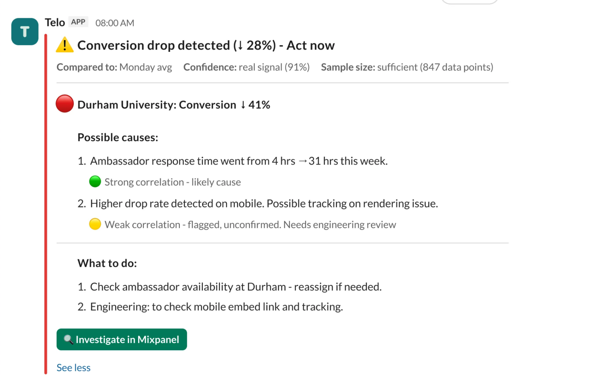
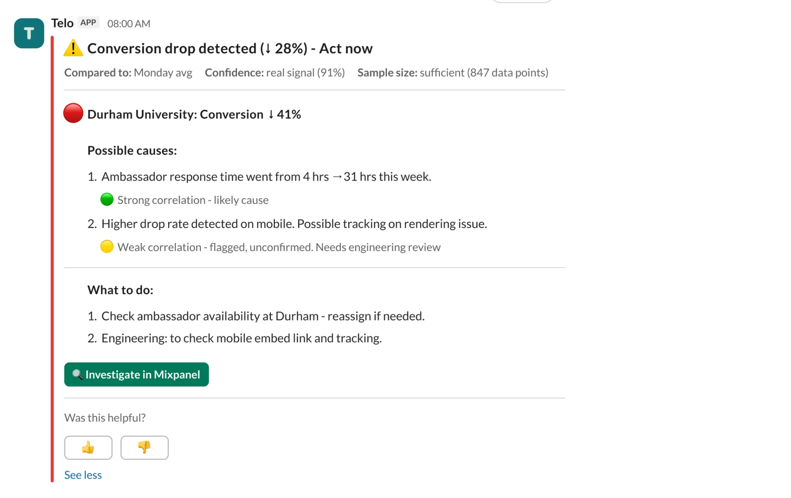

Designed from scratch - a Slack-native alert that tells SaaS founders whether a metric drop is real and what to do next, reducing decision-making time.

A Slack-native alert that tells SaaS founders whether a metric drop is real and what to do next.
Early-stage SaaS founders rely on analytics tools to track business health - making growth decisions without a dedicated analytics team.
Significant time lost deciding whether a metric drop is worth acting on - analytics tools show what changed but not whether it matters and what to do next.
A Slack alert that tells founders whether a metric drop is real, why it likely happened, and what to do.
I first ran into this at Ambassador Platform (an early-stage startup I was working for), where I was responsible for product metrics. Before me, it was the founder doing it alone. I kept seeing the same question in founder communities too - "is this normal?"
You're an early-stage founder with no dedicated person for analytics.
You open your dashboard. A metric is down.
There's no signal on whether it's real, no context on where it's happening, no suggested next step.

Analytics tools were built for analysts - people with time, training, and a team to delegate to
but...
Early-stage founders have none of those. The gap isn't in the data - it's in the handoff between signal and action.
I used a 3-round approach to validate the problem: community scan in founder publics, messages with targeted questions, and 1:1 interviews.
Founders juggle insights from many sources
Creating cognitive overload that makes it hard to know what actually matters.
ValidatedInterpretation uncertainty is the main source of that load
Is this drop meaningful or just noise?
Strongly validatedFounders look for external benchmarks
To compensate for small sample sizes and lack of confidence in early data.
Not validatedFounders spend significant time analysing product behaviour
Inefficiently and at a mental cost.
Partially validatedTo check whether the pain was real before investing in structured research, I observed Reddit, LinkedIn, and founder Slack groups - reading threads and posting on targeted topics across 6+ communities.
I wanted to confirm whether the problem was missing data or missing interpretation - and whether founders felt the gap acutely enough to change behaviour. I posted targeted questions directly to Reddit founder communities and captured the responses.
To go beyond surface patterns, I ran in-depth interviews with founders, using a screener to focus on the real decision-making process when a metric changes.
Gathered all insights and structured them using an affinity diagram - clustering patterns, identifying interpretive gaps, and translating the findings into Jobs to be Done.
View affinity diagram in Figma →With that in mind I have chosen 1 main type of the user persona to consider while making the design decisions. Here she is

3 frameworks used to translate research insights into a clear, scoped feature set.
I built an opportunity solution tree to connect the research findings to potential solutions - defining what solution needed to address without jumping to features too early.
Signal clarity
Founders can't tell if a metric drop is real or noise - they need a verdict before they can act.
Contextual triage
Once something is flagged, the founder needs to know where it's happening - which segment, which account - without opening five tabs.
Suggested action
The gap between identifying a problem and knowing what to do about it. Closing that gap is where the most time is lost.
I mapped 9 tools across 5 dimensions to understand what existing analytics products already solve - and where the white space is. Decision support and data confidence scored lowest across every tool.
| Tool | Signal vs noise Do they filter alerts? | Context & benchmarks Historical comparisons? | Decision support Suggest actions? | Data confidence Flag sample issues? | What early-stage founders miss The gap |
|---|---|---|---|---|---|
| Amplitude | ● Strong Anomaly detection + smart alerts. Filters well. | ● Strong Rich historical views, trend overlays. | ○ None No action templates or next-step guidance. | ● Partial Sample size warnings exist but not prominent. | Complex UI. No "what now?" answer. Built for analysts. |
| Mixpanel | ● Partial Alerts exist but require manual setup per metric. | ● Strong Cohort comparison, retention curves. | ○ None Surfaces the what, not the why or next step. | ○ None No confidence scoring on data reliability. | Still needs an analyst to interpret. Action gap wide open. |
| Pendo | ● Partial Usage-focused alerts. Metric alerts less developed. | ● Partial Some benchmarks for in-app behaviour. | ● Partial NPS + guidance flows - not metric decisions. | ○ None No data quality signalling. | Product-usage framing - not a metric triage tool for founders. |
| Heap | ● Partial Auto-capture helps but alert logic is basic. | ● Partial Retroactive analysis possible, not surfaced proactively. | ○ None No suggestion layer. | ● Partial Session-level data quality, not metric-level. | Powerful retroactively - useless if you don't know what to look for. |
| Google Analytics | ● Partial Custom alerts available but noisy without tuning. | ● Strong YoY, MoM comparisons built in. | ○ None Shows the data. Says nothing about what to do. | ○ None No sample confidence for small datasets. | Traffic-first. Not built for SaaS metrics or founder triage. |
| PostHog | ● Partial Alert rules exist but require engineering setup. | ● Partial Trend views built in; no benchmarking. | ○ None Developer-focused - no guidance layer. | ● Partial Flags some statistical significance. | Self-hosted power tool. Founders still do all the interpretation. |
| Databox | ● Strong Goal tracking + alerts on KPI movement. | ● Partial Goal vs actual. No deep historical benchmarks. | ○ None Shows variance. Doesn't explain or guide. | ○ None No data quality layer. | Scoreboard, not a triage tool. Good at "off target" - silent on why. |
| ChartMogul | ● Partial MRR movement alerts. Limited scope. | ● Strong Best-in-class for subscription benchmarks. | ○ None Revenue-first - no decision support. | ● Partial Some segment-level reliability signals. | Great for revenue. Narrow - nothing about product or activation. |
| Klipfolio | ● Partial Threshold alerts on dashboards. | ● Partial Custom date range comparisons only. | ○ None Dashboard only - no guidance layer at all. | ○ None No quality or confidence signals. | A display layer. No intelligence. The founder still does all the thinking. |
I prioritised the feature set across three releases using an impact-effort matrix.
I chose a Slack alert as the solution format - the place where the majority of early-stage startup teams (more than 60%) already work.
I sketched 8 variations of how the alert could be structured - testing different information orders and how much to show before asking for action.

8 variations · Each shows a different information order and disclosure model
Lead with the header and confidence score in the collapsed state, reveal the full context only on "Show more" - just enough to decide whether to react now, without front-loading everything at once.
Rather than wireframes, I used real Slack Block Kit components from the start - which helped me see the platform's design constraints right away and shape decisions around them early.
Meets founders where they already are; no new tool to learn or open
Limited UI flexibility; no persistent dashboard view of historical alerts
Approximately 60% of early-stage startups use Slack. A native alert in their existing workflow has a far higher chance of being seen and acted on than another tab to open.
When designing I considered two reading depths of the same alert - a 10-second triage (to know whether to act) and a 2-minute decision (to define the probable causes and suggested actions).
Severity color
Is this urgent, at a glance
Headline with the metric and delta
What dropped and by how much
Confidence score
Is this real or noise

Severity, metric drop, and confidence score - enough to decide whether to act.
Probable causes, baseline comparison, suggested actions, and multi-account view - everything needed to take the next step.
3 participants · 10-15 minutes each
Task: "You just got this alert at 8:45am. Standup in 15 minutes. Walk me through your thoughts and actions."








Screen recording of the alert in Slack.
Telo closes the gap between seeing a metric drop and knowing what to do about it - without the founder leaving Slack.
From alert delivered to the first click - "Show more", Investigate, or a delegation @mention. Measures whether the alert actually replaces the manual triage loop.
Target: < 2 min per alertOf alerts marked high-confidence, how many lead to an Investigate click? Tracks whether founders trust the verdict enough to act on it.
Target: > 70% of high-confidence alertsShare of alerts with no interaction at all within 24 hours. A rising rate means the alerts aren't worth reading - the fastest way to lose trust in the channel.
Target: < 10% of alerts ignoredCheck the platform limits before you sketch.
I learned Slack's constraints halfway in and had to redraw. Next time, I'd map them first - it would have saved a full round of sketches.
People want to be told what it means, not what it is.
Every test, participants skipped the number and looked for the conclusion. Now I write the words before I place the data.
Signal intelligence for SaaS founders · 2026